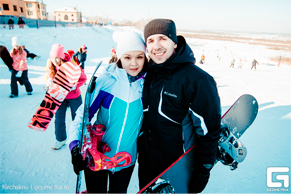

Горнолыжный центр ГАУ ТО «ЦСО «Воронинские горки» располагается в черте города Тюмени на живописном берегу реки Тура.
Для проведения Вашего досуга и занятий горнолыжным спортом Вам будут предложены три прекрасно подготовленные трассы, их протяженность порядка 350 метров каждый склон. Перепад высот около 50 метров. Подходящие для спуска трассы есть и для начинающих, и для спортсменов со стажем.